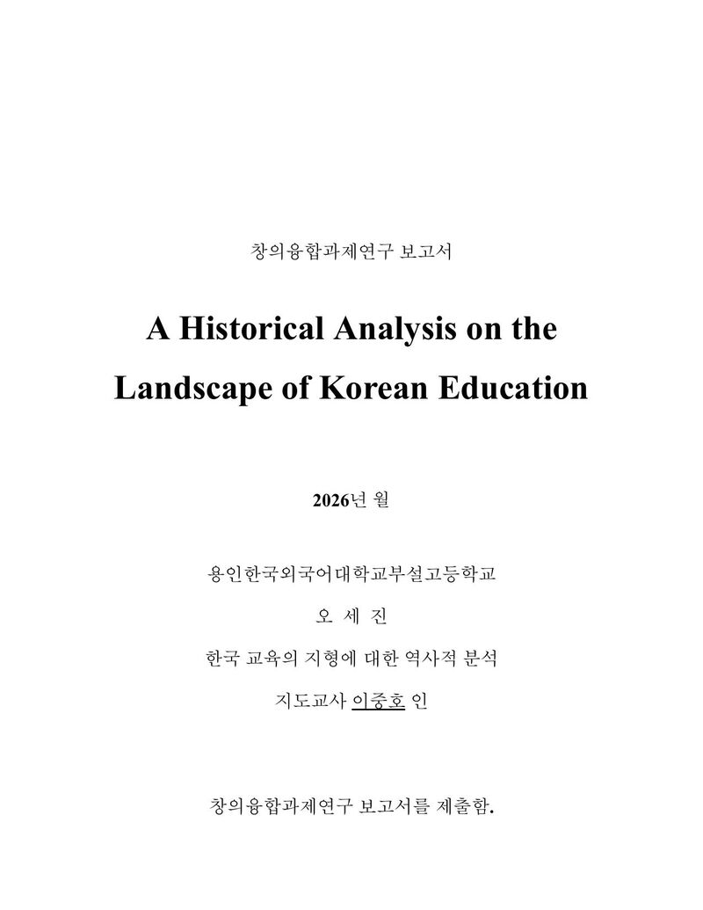
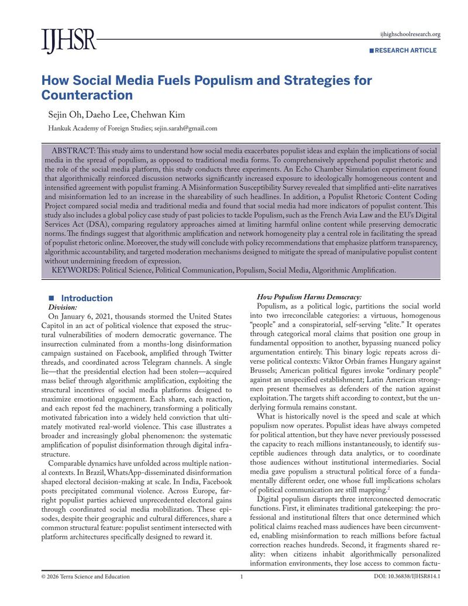
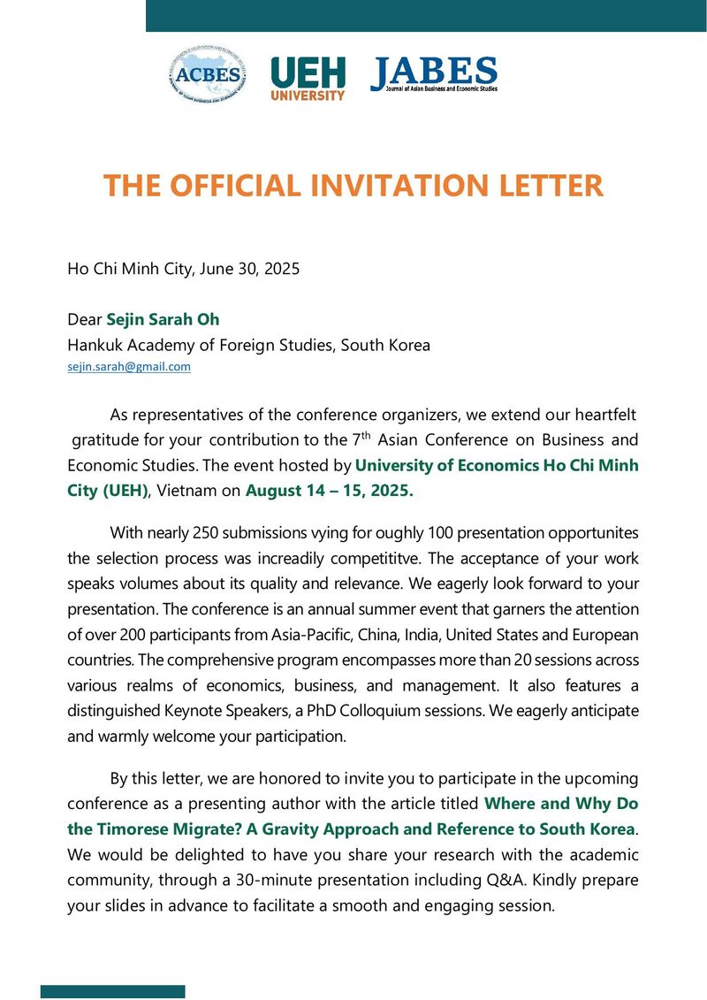

Research View all →

Research I
Korean Education, Historically
On Confucian culture, colonial history, and market liberalization.

Research III
How Social Media Fuels Populism
First author, published in the International Journal of High School Research.

Research II
Timorese Labor Migration
Published in Nakhara (NJEDP); presented in Hanoi, Vietnam.
Work View all →
Writing View all →
President & Editor-in-Chief, BEACON
Directed a biannual publication and managed 50+ reporters.
Policy Recommendations Series
Child welfare, crime & justice, environment, and economic policy essays.
Philosophy Essay Series
On epistemology, AI ethics, the categorical imperative, and the Gettier problem.